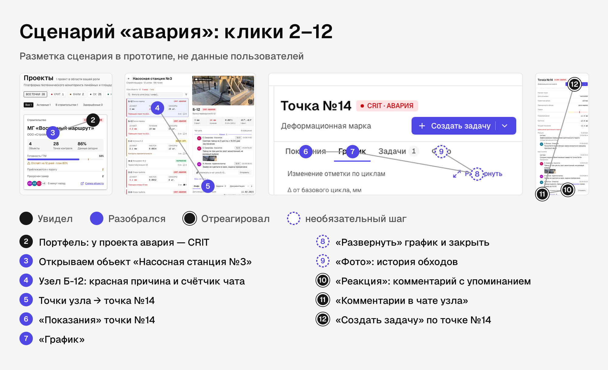
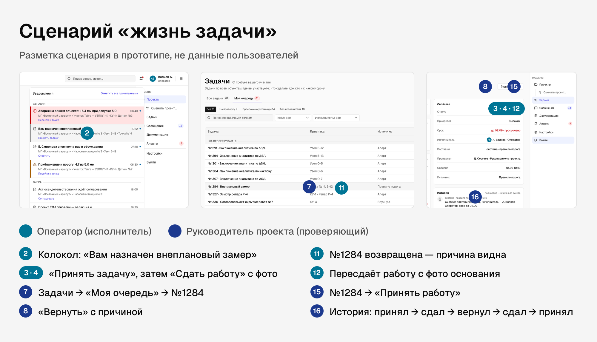
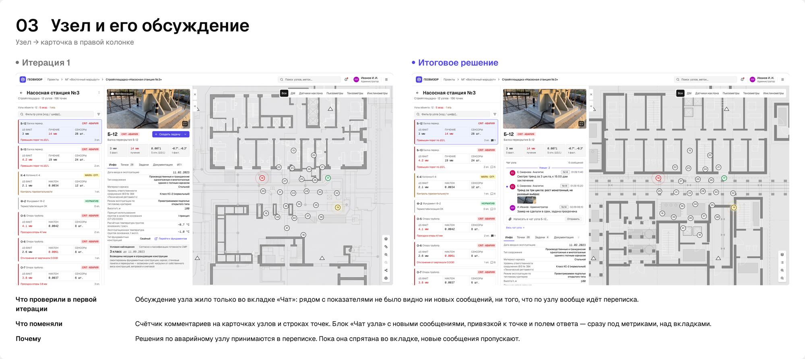
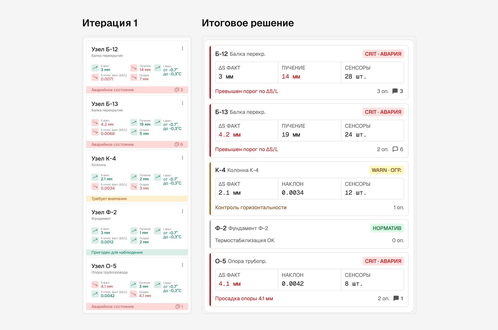
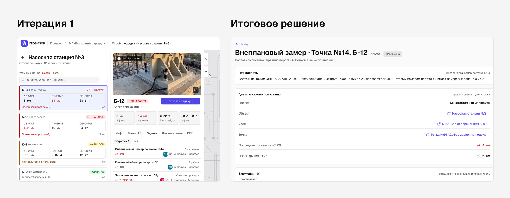
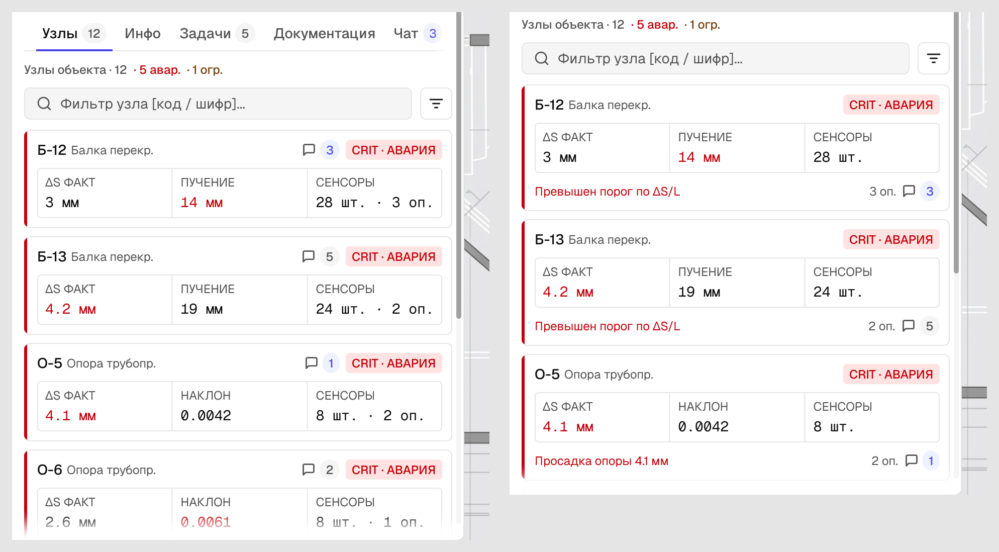

Что это и чем не является. Это проверка прототипа силами команды: экспертная оценка по эвристикам, сквозные прогоны сценариев в рабочем прототипе и автотесты. Сессий с внешними участниками на этом этапе не было, поэтому здесь нет процентов прохождения, цитат участников и тепловых карт по данным. Всё, что считается, — шаги сценариев и найденные дефекты. Тест с реальными пользователями — отдельным планом в конце документа.
Методика
| Что делали | Как | Что получили |
|---|---|---|
| Экспертная оценка | Ревью экранов по 10 эвристикам Нильсена и по контракту дизайн-системы | Список находок, у каждой — доска вариантов и решение |
| Сквозные прогоны | Два ключевых сценария в рабочем прототипе, вход по логину под разными ролями | Число шагов, тупики, расхождения состояний между ролями |
| Автотесты | 300+ наборов, ≈ 1 340 проверок в коде: маршруты всеми ролями, сверка цветов и геометрии с макетом, поиск «мёртвых» элементов | Кнопки без действия, расхождения с макетом |
| Условия | Темы Light и Dark, ширины 1280 и 1920 | Дефекты, видные только в одной теме или на узком экране |
| Фиксация итераций | Пара «итерация 1 → итоговое решение» в обеих темах | Снимок, причина и объяснение для стейкхолдеров |
Сценарии
«Авария» — увидел → разобрался → отреагировал
Роль — Оператор. 12 шагов, из них 11 — от портфеля до задачи. Ролик сценария — 1:39.
| № | Шаг | Фаза |
|---|---|---|
| 1 | Вход по логину | — |
| 2 | Портфель: у проекта авария, CRIT | Увидел |
| 3 | Открывает объект «Насосная станция №3» | Разобрался |
| 4 | Узел Б-12: красная причина и счётчик чата | Разобрался |
| 5 | Точки узла → точка №14 | Разобрался |
| 6 | Вкладка «Показания» | Разобрался |
| 7 | Вкладка «График» | Разобрался |
| 8 | Разворачивает график на весь экран и закрывает | Разобрался, необязательный шаг |
| 9 | «Фото»: история обходов, листает стрелками | Разобрался, необязательный шаг |
| 10 | «Реакция»: комментарий с упоминанием коллеги | Отреагировал |
| 11 | Комментарий виден в чате узла | Отреагировал |
| 12 | «Создать задачу» по точке №14 | Отреагировал |
Без необязательных шагов 8 и 9 путь от аварии в портфеле до задачи — 9 шагов.
«Жизнь задачи» — исполнитель и проверяющий
Две роли, четыре входа, 16 шагов. Цикл: принял → сдал → вернул → сдал → принял.
| № | Шаг | Роль |
|---|---|---|
| 1–2 | Вход; колокол: «Вам назначен внеплановый замер» | Оператор |
| 3–4 | Карточка задачи №1284 → «Принять задачу» → «Сдать работу» с фото | Оператор |
| 5–8 | Выход; вход; «Задачи → Моя очередь → №1284»; «Вернуть» с причиной | Руководитель проекта |
| 9–12 | Выход; вход; задача возвращена, причина видна; пересдаёт работу с фото основания | Оператор |
| 13–15 | Выход; вход; «Принять работу» | Руководитель проекта |
| 16 | История задачи: принял → сдал → вернул → сдал → принял | Руководитель проекта |
Оба сценария проходятся без тупиков в двух темах. Причина возврата видна исполнителю там, где он будет пересдавать работу, а история записывает каждый шаг.
Карта кликов по сценарию
Это разметка сценария, а не тепловая карта по данным пользователей. На экранах отмечено, где в пути «увидел → разобрался → отреагировал» нужен клик, в каком порядке и в какой фазе. Карта показывает, насколько далеко друг от друга лежат шаги и где взгляду приходится прыгать через экран.


Что видно по карте. Фаза «разобрался» занимает больше всего шагов, но почти все они происходят в одной колонке справа от плана: человек не теряет карту. Фаза «отреагировал» собрана в одном месте — панели точки. Отсюда же гипотеза для теста: заметит ли человек счётчик чата на карточке узла на шаге 4 без подсказки.
Находки и что поменяли
| Эвристика | Находка | Что поменяли |
|---|---|---|
| Видимость состояния системы | Обсуждение узла жило только во вкладке «Чат»: рядом с показаниями не видно ни новых сообщений, ни самой переписки | Серый счётчик комментариев на карточках узлов и строках точек; блок «Чат узла» над вкладками |
| Эстетика и минимализм | У каждой карточки в ленте узлов своя цветная плашка, цветные значки и значения — цвета спорят, авария не выделяется | Карточка нейтральная; цвет только у полосы аварии и значений за порогом |
| Видимость состояния | В портфеле отставание красило засечку плана в красный: красного много, авария тонет. Янтарь, пришедший на замену, в светлой теме читался почти как чёрный текст | Плашка только у аварии; «Отстаёт» — янтарём со значком; выбирали из пяти вариантов с замером контраста |
| Контроль и свобода | Колокол вёл на отдельный экран, и человек терял место на карте | Панель поверх экрана без затемнения; уводит только выбор строки |
| Соответствие реальному миру | Задачи были строками во вкладке узла: нельзя принять, сдать, вернуть | Карточка задачи и жизненный цикл с действиями по ролям |
| Предотвращение ошибок | Возврат работы без объяснения оставляет исполнителя гадать | «Вернуть» требует причину; причина видна при пересдаче |
| Согласованность и стандарты | Аудит 23 рядов фильтров: три вида триггера, поиск то слева, то посередине, сортировка с префиксами и без | Единый ряд в две строки: «что показываем» и «как отбираем»; раскатан на 78 кадров |
| Узнавание, а не вспоминание | Серые ярлыки с рамкой выглядели как кнопки: рамка ярлыка оказалась контрастнее рамки настоящей кнопки | Категория — текстом; признак — тихим чипом без рамки; статус — плитой |
| Контроль и свобода | Растровая подложка плана не масштабировалась, в тёмной теме выглядела чужеродно | Векторный план площадки, по которому можно перемещаться и масштабировать |
| Видимость состояния | Автотесты нашли элементы, которые выглядят нажимаемыми, но ничего не делают | Правило «нет мёртвых элементов»: работает, спрятано или честно говорит «раздел в разработке» |
Итерации: было → стало




Почему красную причину тревоги не заменили счётчиком, как предлагал стейкхолдер: тогда у двух узлов из пяти видимых пропал бы критерий тревоги. Тревога важнее, поэтому счётчик встал рядом и остался серым.
План теста с пользователями
Статус: план. Проводится на том же рабочем прототипе, после сборки v2.
Участники. По два человека на роль: руководитель проекта, аналитик, оператор, ФЭО — 8 человек. Заказчик и администратор — по одному. Опыт в ГТМ-мониторинге обязателен.
Формат. Модерируемые сессии по 45–60 минут: 10 минут вводного интервью по гайду из Исследования ролей, дальше задачи в прототипе с думанием вслух, запись экрана и кликов.
Задачи
| Роль | Задача | Успех |
|---|---|---|
| Руководитель проекта | «На каком объекте сейчас опасно? Разберитесь и поручите замер» | Дошёл до точки и поставил задачу без подсказки |
| Оператор | «Вам пришла задача. Выполните её и сдайте» | Принял и сдал с фото; после возврата нашёл причину |
| Аналитик | «Укладывается ли точка №14 в допуск? Оставьте вывод» | Нашёл график с порогами, написал в чат узла |
| ФЭО | «Какие документы ждут вашего согласования? Согласуйте договор» | Нашёл «Ждут моего согласования», прошёл шаг маршрута |
| Заказчик | «В норме ли ваш объект?» | Ответил за 30 секунд |
Что меряем: успешность без подсказки, время и число кликов до цели в сравнении с разметкой сценария, заметность счётчика чата и блока «Чат узла», ошибки навигации. Тепловые карты кликов строим по записям и сравниваем с картой сценария выше.
Критерий для v2: если меньше трёх из четырёх руководителей и аналитиков доходят от аварии до задачи без подсказки, возвращаемся к входу в реакцию: счётчику и кнопке «Создать задачу».